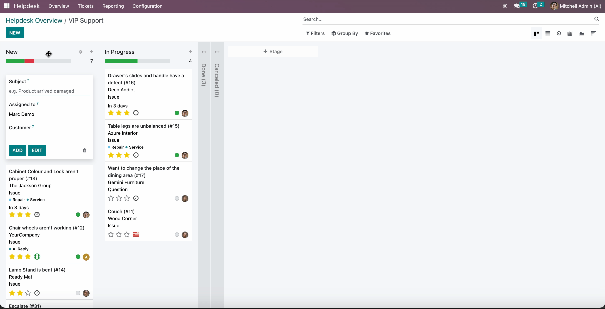
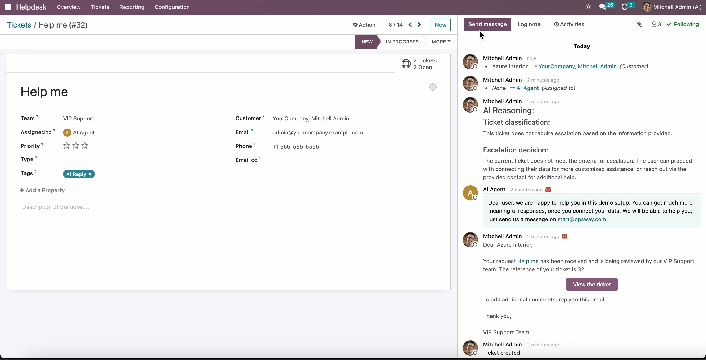
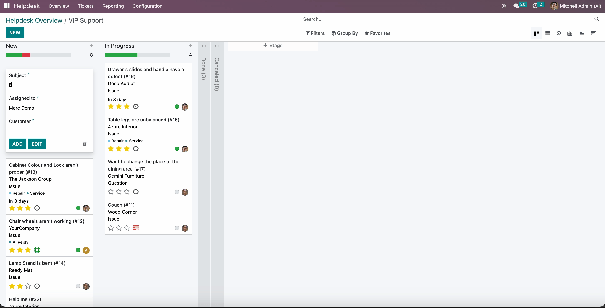
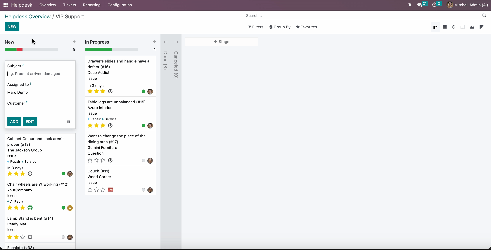
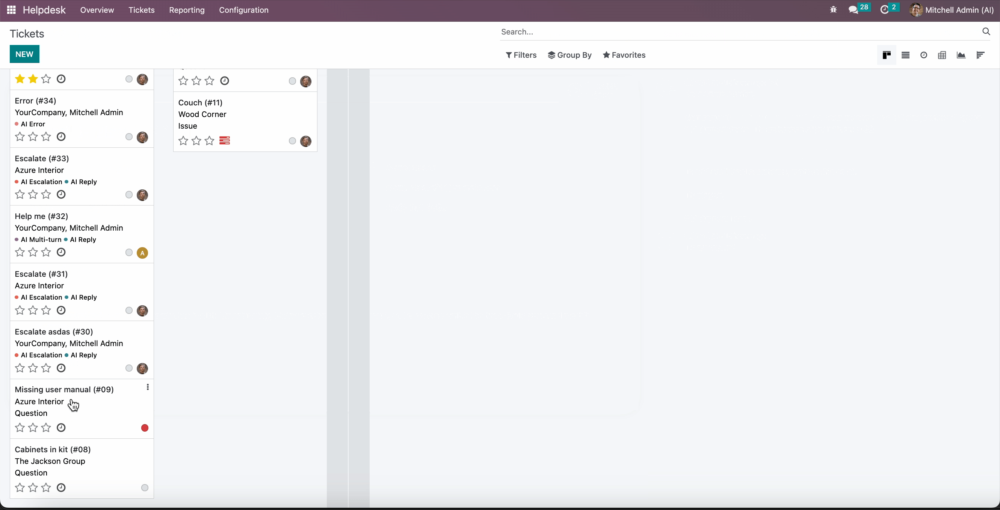

<link href="https://fonts.googleapis.com/css2?family=Open+Sans:ital,wght@0,300;0,400;0,500;0,600;0,700;0,800&amp;display=swap" rel="stylesheet"></link>
<section class="py-3">
    <div class="container" style="font-family: 'Open Sans', sans-serif;">
        <div class="p-5 bg-white" style="border-radius: 10px; box-shadow: -40px 40px 160px 0 rgb(0 0 0 / 8%), -8px 8px 15px 0 rgb(120 120 120 / 4%), 3px 3px 30px 0 rgb(0 0 0 / 4%) !important;">
            <h1 class="text-center" style="font-size: 48px;">AI Helpdesk Ticket Processing</h1>
            <h2 class="text-center" style="font-size: 20px; font-weight: 400;">Process tickets with AI and send responses to customers.</h2>
        </div>

        <div class="mt-3 bg-white" style="border-radius: 10px; box-shadow: -40px 40px 160px 0 rgb(0 0 0 / 8%), -8px 8px 15px 0 rgb(120 120 120 / 4%), 3px 3px 30px 0 rgb(0 0 0 / 4%) !important;">
            <div class="tab-content p-4">
                <div class="tab-pane fade active show" role="tabpanel">
                    <div class="d-flex flex-column p-4 mb-4" style="background-color: #f3f5f7; border-radius: 10px;">
                        <h4 class="text-center" style="font-size: 20px;">What It Does</h4>
                        <ul style="list-style: disc; padding-left: 20px;">
                            <li>Send tickets to AI for automated handling.</li>
                                <li>Handle back-and-forth (multi-turn) conversations with customers using AI.</li>
                                <li>Works with customer attachments.</li>
                            <li>Train the AI with real examples from your tickets.</li>
                        </ul>
                    </div>

                    <div class="d-flex flex-column p-4 mb-4" style="background-color: #f3f5f7; border-radius: 10px;">
                        <h4 class="text-center" style="font-size: 20px;">How It Works</h4>
                        <ul style="list-style: disc; padding-left: 20px;">
                            <li><b>When a Ticket is Created:</b>
                                <ul style="list-style: circle; padding-left: 20px;">
                                    <li>The system sends the ticket to the AI.</li>
                                    <li>If the AI processes it successfully: Adds an <i>AI Reply</i> tag and assigns it to the AI agent.</li>
                                    <li>If there is an error: Adds an <i>AI Error</i> tag and assigns it to a human agent.</li>
                                    <li>If the AI recommends escalation: Adds an <i>AI Escalation</i> tag and assigns it to a human agent.</li>
                                </ul>
                            </li>
                            <li><b>When a Customer Replies:</b>
                                <ul style="list-style: circle; padding-left: 20px;">
                                    <li>If the ticket is assigned to the AI agent, the system sends it back to the AI.</li>
                                    <li>If processed successfully: Adds an <i>AI Multi-turn</i> tag.</li>
                                </ul>
                            </li>
                        </ul>
                    </div>

                    <div class="d-flex flex-column p-4 mb-4" style="background-color: #f3f5f7; border-radius: 10px;">
                        <h4 class="text-center" style="font-size: 20px;">Examples in Action</h4>
                        <ul style="list-style: disc; padding-left: 20px;">
                            <li>
                                <h5>AI Reply Generation</h5>
                                <p>Shows the AI generating replies and adding relevant tags to the ticket for tracking. Pay attention to the tag and reasoning provided.</p>
                                
                            </li>
                            <li class="mt-3">
                                <h5>AI Multi-Turn Conversations</h5>
                                <p>Shows how the AI manages multi-turn conversations, maintaining context across customer replies.</p>
                                
                            </li>
                            <li class="mt-3">
                                <h5>AI Escalation</h5>
                                <p>Demonstrates how the AI identifies issues that require human attention and escalates them effectively. Note the tags and reasoning used in this flow.</p>
                                
                            </li>
                            <li class="mt-3">
                                <h5>AI Error Handling</h5>
                                <p>Illustrates how the system handles AI processing errors and escalates the ticket to a human agent for further processing or re-processing.</p>
                                
                            </li>
                            <li class="mt-3">
                                <h5>Force Ticket Processing</h5>
                                <p>Explains how to force AI processing during outages or exceptions, ensuring continuity.</p>
                                
                            </li>
                            <li class="mt-3">
                                <h5>Create Dialog for Training</h5>
                                <p>Shows how to create example dialogs to feed into the LLM fine-tuning pipeline. Includes options for saving as drafts or publishing.</p>
                                
                            </li>
                        </ul>
                    </div>
                </div>
            </div>
        </div>
    </div>
</section>
